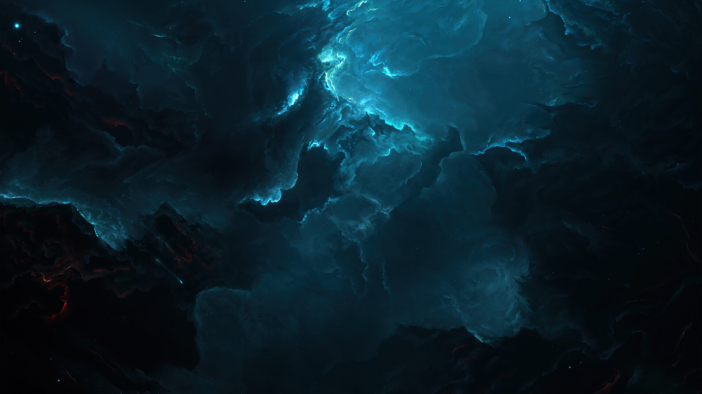

|

-
Peste 100 de sateliți artificiali sunt lansați în spațiu în fiecare an.
-
Vulcanul Olympus Mons(21.9 km), de pe Marte, are cel mai înalt varf din intregul sistem solar, acesta fiind de 3 ori mai înalt ca Everest.
-
Fotonilor din interiorul Soarelui le ia peste 10 milioane de ani să ajungă la suprafața acestuia.
-
Din pricina vântului solar, Soarele pierde 1.000.000 de tone de materie pe secundă.
-
În constelația Lebada se află cea mai mare stea descoperită pana acum. Aceasta este de aproximativ un milion de ori mai mare decât Soarele nostru.